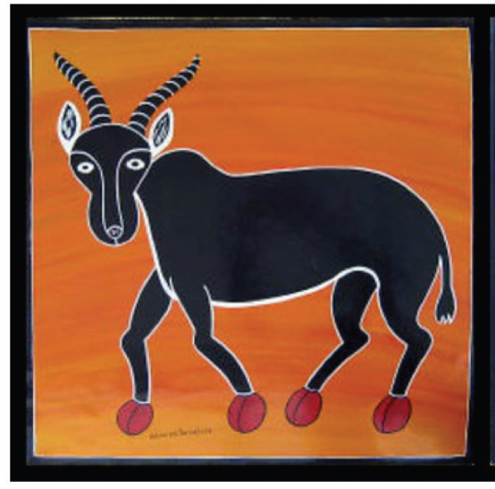
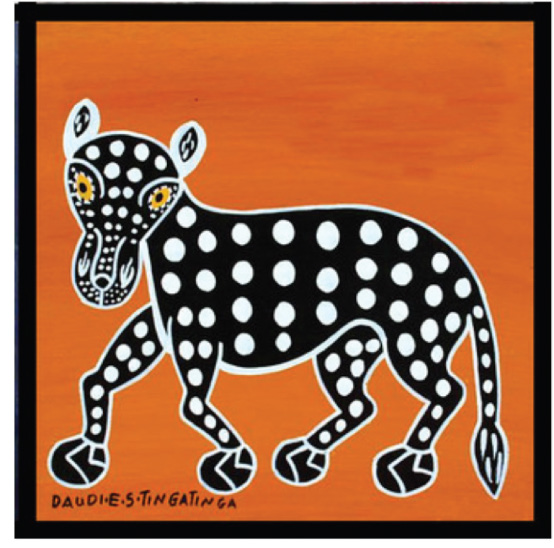

Activity 5.2
Collect images of Tingatinga painting styles from various sources including online, and discuss their stylistic features.
Exercise 5.2
1.
Cultural influential power contributes to individuals adhering to a certain dominant culture voluntarily or involuntarily. How did this influence help Edward Said Tingatinga to introduce the Tingatinga painting style?
2.
A serious concentration with artwork production, pays a lot. How did Tingatinga art painting style (naive art) change Edward Said Tingatinga’s economy?
Unique features of the Tingatinga painting style
The Tingatinga painting style includes unique features.
The features involve some exaggerated motifs of animals, birds, fish, flowers, and the environment.
Objects appear flat and painted without consideration of the elements and principles of art like perspective and proportion.
They are usually painted with borders (See Figure 5.3).
The paintings are usually made up of bright colours (See Figure 5.4).
Figure 5.5-5.8 shows different Tingatinga styles.


